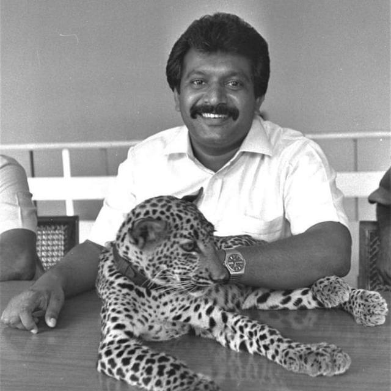

The Journey Beyond Propaganda
The Journey Beyond Propaganda
Jaffna Monitor hellojaffnamonitor@gmail.com 35 T hirteen years ago, one fine day, I took the bold step to mildly criticize the Liberation Tigers of Tamil Eelam (LTTE) and its leader, Prabhakaran, in a Facebook post. My criticism, written in Tamil, read as follows: 'jiytu; vq;fSf;fhf rpe;jpf;fpwhu; vd ehq;fs; Nkhl;L tisaj;ij ghu;j;Jf;nfhz;L ,Ue;Jtpl;Nlhk;. jiytu; vq;fisf; nfhz;L Ngha; Ks;sptha;f;fhy; Kl;Lr; re;Jf;Fs; epWj;jptpl;lhu;". When translated, it essentially means, "We have been idly lying around, staring at the ceiling, thinking that our leader is doing the thinking for us. But, the leader has led us to a dead-end at Mullivaikal'. The backlash from my then-close Tamil friends was immediate and intense; they questioned my birth, my value, and the level of my IQ; one of my classmates from Jaffna Hindu College commented in that Facebook post, suggesting with a tone of sympathy, "Surely, you must be out of your senses to level by: Kaniyan Pungundran The Journey Beyond Propaganda
Jaffna Monitor hellojaffnamonitor@gmail.com 36 criticism at Our boys or our leader. It would be wise for you to seek a psychiatric evaluation." Others, who were more confrontational, challenged me to return to Jaffna, insinuating that a harsh lesson awaited me there. The Indoctrination of Tamil Youth Compared to North Korea The response I got for the post can draw parallels with the kind of reaction you might expect from staunch, brainwashed religious or cult followers. The very idea of questioning the LTTE's actions or its leader was blasphemous to many of my close friends. If you were born and raised in the northern and eastern parts of Sri Lanka during the 1980s and 1990s, where the majority are Tamils, there's a good chance you were never introduced to the notion that no person or organization is beyond criticism. For the youth of that era, Prabhakaran's word was taken as law. The extent of indoctrination that the Tamil youth experienced in the 1980s and 1990s in the northern and eastern regions, in my view, mirrors the intensity of indoctrination imposed by the North Korean regime on its own people. I recall viewing a video years ago in which North Korean citizens were seen weeping at the mere sight of their Supreme Leader, Kim Jong Un. In the video, an elderly woman, with great emotion, expressed to the television crew how her beloved leader was safeguarding their nation from the mighty United States and its allies. The facets of North Korean existence — from Information Isolation, Forced Labor, and Human Rights Violations to Travel Restrictions — are deeply ingrained in daily life. However, when indoctrination takes deep root, one might find justifiable reasoning in every action taken by their revered leader, wouldn't you agree? This same manner of mental conditioning was imposed on the minds of my generation, and tragically, many remain unaware that even their once leader, Prabhakaran, or his organization, are subject to evaluation and criticism. The Cult of the 'Sun God': Deepening the Indoctrination The image of Prabhakaran as an uneducated figure does not accurately reflect his exceptional skills in manipulating propaganda and carrying out systematic indoctrination. His effectiveness in these realms was such that the LTTE managed to effectively eliminate other Tamil militant groups that had surfaced to advocate for the exact cause. These groups were condemned as traitors, and their members, including intellectuals and prominent figures, were executed ruthlessly. These extreme actions were condoned by a significant section of the Tamil public, who, influenced by LTTE's persuasive propaganda, believed such measures were a necessary evil in the fight for freedom. Rationalizing Atrocities Under Propaganda During the era of Prabhakaran's leadership, his singular ideology became the defining narrative for the entire movement. His perspectives and tactics weren't merely representative of the LTTE; they were emphatically instilled within the Tamil youth. Such was the level of indoctrination that reached a point where the child began to internalize the belief that a 'normal' thought process echoed the staunch devotion of an ardent LTTE supporter. The Perils of Absolute Ideology and Suppressed Criticism The potency of the LTTE's propaganda instilled a deep conviction among many youths of my generation that Prabhakaran was not just a leader but a "Sooriya Thevan," a "Sun God," endowed with an almost mystical aura of invincibility. This perception was bolstered by the LTTE's unexpected military victories under Prabhakaran's leadership, feats that seemed to defy reality and elevated his status to one of divine-like reverence. The propaganda machine systematically cultivated an environment where questioning his decisions was tantamount to heresy. Followers were urged to emulate the unquestioning obedience found in the pages of religious texts, where faith dictates that the word is to be followed without doubt or debate. Blind Allegiance Among Educated Professionals The effectiveness of the LTTE's propaganda is evident in the manner in which they secured the allegiance of many Tamils, convincing them to rationalize even the horrors they perpetrated against their own. The LTTE excelled in crafting narratives that glorified the ultimate
Jaffna Monitor hellojaffnamonitor@gmail.com 37 sacrifices of their youth, linking their cadres' loss of life to the organization's ruthless actions. Tamils harbour deep sentiments for the thousands of young lives lost to the cause of the LTTE, with a prevailing belief that these individuals surrendered everything for their people's welfare, thus nurturing a profound sentiment within the community. Learning from the LTTE's Strategic Failures However, the irony lies in the fact that even those Tamils who fervently supported the Tamil cause yet expressed any dissent towards the LTTE's strategies were quickly labelled as traitors. For instance, in the LTTE-controlled areas, suggesting in 2006 that Prabhakaran's actions were leading the community towards a catastrophic outcome like that of Mullivaikkal would be enough to have one deemed a traitor and likely executed. This draconian stance towards any form of criticism created an atmosphere where open dialogue was stifled, and it inevitably contributed to the tragic and unnecessary loss of thousands of lives. The LTTE's indoctrination was so entrenched that it not only justified their brutalities but also silenced those who dared to question their approach, regardless of how faithfully they championed the Tamil cause. Looking Towards a Future of Liberated Minds What's startling is that even after the glaring failures of the LTTE's strategies, many from my generation, including accomplished professionals like doctors, engineers, and lawyers, remain blinded. Listening to their one-sided, impractical, and unrealistic arguments, I often wonder: how could someone with such brainwashed views become such a studious and knowledgeable individual? That sometimes leads me to wonder, Do brainwashing and academic studies engage different parts of the brain? In the end, the legacy of the LTTE and the indoctrination of Tamil youth stands as a sombre reminder of the perils of absolute ideology and the critical need for open dialogue and introspection within any movement. True liberation cannot be achieved when minds are shackled by the chains of dogma and uncritical allegiance. As we look to the future, it is paramount that we heed the lessons of our past, recognizing that genuine freedom is rooted in the empowerment of the individual to think freely and critically. In my opinion, you cannot liberate people with their minds in chains. The path to true liberation is paved with questioning minds, the courage to challenge monolithic narratives, and the willingness to embrace diverse perspectives. At the very least, this can be a starting point for some much-needed self-reflection. A. Varadaraja Perumal, the former Chief Minister of Sri Lanka's North-Eastern Province, emphasized the need for Sri Lankan Tamil parties to increase engagement with India to address the Tamil issue. In an interview after a book launch in Coimbatore, he expressed concern that current Tamil leaders are not actively pursuing dialogue with Indian counterparts, unlike during 1983- 87. Perumal stressed the importance of India's role in resolving the Tamil question, noting that the Indian government's actions must be supported by its people and leaders. He advocated for closer ties between Tamil leaders and officials in New Delhi and Tamil Nadu. Perumal warned against extreme or radical approaches and highlighted the significance of properly implementing Sri Lanka's 13th Constitutional Amendment, which deals with devolution of power to provincial councils. He suggested revisiting this Amendment, with Indian legal experts advising on its effective implementation. Additionally, Perumal called for humane consideration of Sri Lankan refugees in Tamil Nadu, proposing solutions like providing permanent documents for employment and easing restrictions on their travel to Sri Lanka. Perumal's Playbook: Dial India for Tamil Solutions in Sri Lanka MONITOR MEMO
